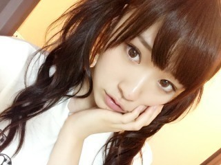
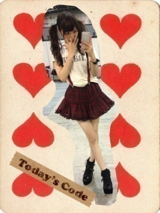
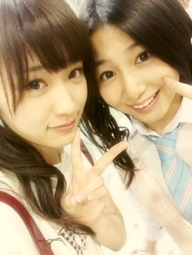
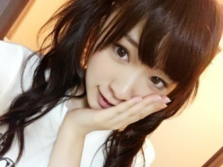

2013/0922Sun（´-`）.｡oO(か ずみん×221
今日は握手会でした(*´ω`*)
久々であっという間だった(*ﾟﾛﾟ)!!
来てくださったみなさん、
ありがとうございました！

今日の気分はツイン♡
セーラームーンみたいに
なりたい！！！笑

最近は可愛くてラインが綺麗に
出るのが好きですっ♪♪
もう20歳になるし...
大人っぽいのも試したいな！

今日も安定の市來先生と(*´ｰ`*人)

みなさん、握手会
また来てくださいね(*∩ω∩)
明日もお仕事 頑張りますっ！
みなさんは日曜日かぁ...
毎日楽しんでね( ∩ˇωˇ∩)
それでは。
2013/09/22 00:30
コメント(585)
バケラッタヽ(´>∀<`*)ﾉ
握手会お疲れ様〜♪(人´ω｀*).｡*ﾟ+.*.｡
かずみんも、お仕事楽しんで
ヾ(＠＾▽＾＠)ﾉ
では、(｀_´)ゞ
握手会お疲れ様〜♪(人´ω｀*).｡*ﾟ+.*.｡
かずみんも、お仕事楽しんで
ヾ(＠＾▽＾＠)ﾉ
では、(｀_´)ゞ
握手会お疲れ様。
ツインもかわいい。
7thの握手会には、ぜひ行きたいです。
ツインもかわいい。
7thの握手会には、ぜひ行きたいです。
バケラッタ！
寝れねーよーw
お疲れ様！
ツインテールまだまだいけるね(*^^*)
明日バイト(泣)
頑張ります(^-^)
おやすみ
ツインテールまだまだいけるね(*^^*)
明日バイト(泣)
頑張ります(^-^)
おやすみ
いつも応援してます!!!!頑張ってください!!!!
アメイジング！！
バケラッター！
一美さん髪形似合ってるね♪
明日の撮影も頑張ってね(/ω＼*)
日曜日でもやることないや(笑)
バケラッタ！า(°﹏°า )
おやすみなさい(*´ ³ `)ﾉ
ツイン可愛い！
大人っぽいツインもイイね！
大人っぽいツインもイイね！
昨日は握手会どうもでした～(^o^)v
初めて乃木坂の握手会行きました(^-^)/
剣道の五段審査頑張りますね！
初めて乃木坂の握手会行きました(^-^)/
剣道の五段審査頑張りますね！
握手会お疲れ様でした！
握手会、お疲れさまでした！
写真可愛い！！＼(^o^)／
本当、セーラームーンかと思いました！
ではっっ('ε'*)
写真可愛い！！＼(^o^)／
本当、セーラームーンかと思いました！
ではっっ('ε'*)
握手会お疲れ様です
ツインめっちゃかわいい\(//∇//)\
お仕事大変かと思いますが頑張って下さい！
ツインめっちゃかわいい\(//∇//)\
お仕事大変かと思いますが頑張って下さい！
バケラッタ！
かずみんもお仕事楽しんでね！日曜日でも働いてる人はたくさんいるしね。
代々木体育館、昼の部当たったよ！やったー！
かずみんもお仕事楽しんでね！日曜日でも働いてる人はたくさんいるしね。
代々木体育館、昼の部当たったよ！やったー！
コメっ！失礼しやす(*`･ω･)ゞ
握手会お疲れ様です(^O^)
ツインのかずみんめっちゃ可愛い(*^｡^*)
でわっ！
握手会お疲れ様です(^O^)
ツインのかずみんめっちゃ可愛い(*^｡^*)
でわっ！
かずみん＼(^^)／
バケラッター
バケラッター
ずーさん、バケラッタ♪
握手会、お疲れさま。
近頃、いろんな髪型してますね。
今回もかなりヒットです。
カワイイな(^з^)-☆
もちろん衣装もね。
大人っぽいずーさんも気になるよ☆
今日の仕事も楽しく頑張って！！
握手会、お疲れさま。
近頃、いろんな髪型してますね。
今回もかなりヒットです。
カワイイな(^з^)-☆
もちろん衣装もね。
大人っぽいずーさんも気になるよ☆
今日の仕事も楽しく頑張って！！
かずみーんヽ(^o^)丿
個握お疲れさまでした～！
無事に福島に帰ってきたところです。
１～５部までたくさん握手してもらい幸せな一日だったよ！
たくさんの元気をもらったので、仕事を頑張るよ。
※髪型ストレートもツインも可愛かったよ！衣装も！！
※来週は名古屋でお会いしましょう！！！あぁ～楽しみヽ(^o^)丿
個握お疲れさまでした～！
無事に福島に帰ってきたところです。
１～５部までたくさん握手してもらい幸せな一日だったよ！
たくさんの元気をもらったので、仕事を頑張るよ。
※髪型ストレートもツインも可愛かったよ！衣装も！！
※来週は名古屋でお会いしましょう！！！あぁ～楽しみヽ(^o^)丿
バケラッタ!!!!ヽ(´>∀<`*)ノうねです！
握手会お疲れ様でした！やばい！かずみん可愛すぎです＼(^o^)／ガチで鳥肌たちました。
ヤバい
めちゃめちゃ握手会行きたいです(;_;)
可愛すぎる。。。
今日もお仕事頑張ってくださいね!!!!ヽ(´>∀<`*)ノ
握手会お疲れ様でした！やばい！かずみん可愛すぎです＼(^o^)／ガチで鳥肌たちました。
ヤバい
めちゃめちゃ握手会行きたいです(;_;)
可愛すぎる。。。
今日もお仕事頑張ってくださいね!!!!ヽ(´>∀<`*)ノ
おはようございます♪
昨日の握手会は５部にお邪魔しました(*^^*)
ツインテール可愛かったですよ(照)
もうすぐ20歳になりますが、まだまだいけますね(笑)
言われてみるとセーラームーンのうさぎちゃんヘアーに似てますね♪
かわいい感じの私服も素敵ですが、
キリッとした大人っぽいかっこいいかずみんも大好きです！(照)
良かったら、大人っぽい私服も見てみたいなぁー(笑)
今日も１日頑張ってください(^-^)/
では、お休みなさい(-.-)Zzz・・・・
かずみん、初コメです！握手会お疲れ様です！
二部終わりだったかなぁ、かずみんが控え室に戻る時、ひたすらアメイジングポーズを1番レーンの後ろのフリーゾーンで仲間とやってたらレスくれたよね？（笑）
本当ありがとう！
そーいえば、ぴかぽんとちゃそくんがかずみんレーンで、大盛り上がりだったらしいね！
なんだかんだいっても、ぴかぽんのかずみん愛はすごいよ？（笑）
ほら、よくいるじゃん？
好きな子にいたずらして泣かせるやつ。
まさに、あんな感じ（笑）
最後までぴかぽんはかずみん好き好きオーラだしてたよ！
たまに浮気をするらしいけど、本気はかずみんだけらしいからこれからもよろしくね！
季節の変わり目、御自愛ください
二部終わりだったかなぁ、かずみんが控え室に戻る時、ひたすらアメイジングポーズを1番レーンの後ろのフリーゾーンで仲間とやってたらレスくれたよね？（笑）
本当ありがとう！
そーいえば、ぴかぽんとちゃそくんがかずみんレーンで、大盛り上がりだったらしいね！
なんだかんだいっても、ぴかぽんのかずみん愛はすごいよ？（笑）
ほら、よくいるじゃん？
好きな子にいたずらして泣かせるやつ。
まさに、あんな感じ（笑）
最後までぴかぽんはかずみん好き好きオーラだしてたよ！
たまに浮気をするらしいけど、本気はかずみんだけらしいからこれからもよろしくね！
季節の変わり目、御自愛ください
一実さんバケラッタ！
握手会お疲れ様です。セーラムーンいけますよ。ティアラがいりますね（笑）ちなみに一実さんはムーン派ですか？自分はジュピター派です（笑）
服装はカワイイし髪型は大人っぽいですね。握手会行きたい！いつかきっと・・なので一実さんたまにはエアー握手会もお願いします！
日曜日は・・・って日曜日に休む人ってどんな人って言うぐらいな感覚になってますね（笑）一実さんもお忙しいと思いますが、頑張って行きましょう！！ファイトだぜぜぜぜぜい！！！
握手会お疲れ様です。セーラムーンいけますよ。ティアラがいりますね（笑）ちなみに一実さんはムーン派ですか？自分はジュピター派です（笑）
服装はカワイイし髪型は大人っぽいですね。握手会行きたい！いつかきっと・・なので一実さんたまにはエアー握手会もお願いします！
日曜日は・・・って日曜日に休む人ってどんな人って言うぐらいな感覚になってますね（笑）一実さんもお忙しいと思いますが、頑張って行きましょう！！ファイトだぜぜぜぜぜい！！！
明里だよん(。・ω・)ノ゛
おはよう！そして更新ありがとう！
とりあえず
またねヾ(´ー｀)ノ
おはよう！そして更新ありがとう！
とりあえず
またねヾ(´ー｀)ノ
お仕事頑張ってください。
ずーさん☆
バケラッタヽ(´ー｀)ノ
まりっか推しの人こと、あおっちです。
おお！ツインって珍しいよね？！
萌え( ´∀｀)
バケラッタヽ(´ー｀)ノ
まりっか推しの人こと、あおっちです。
おお！ツインって珍しいよね？！
萌え( ´∀｀)
かずみんお疲れ様です！
昨日の握手会ありがとうございました(*^o^*)
枚数が少なくて寂しかったですが、めちゃくちゃ楽しかったです！！！
髪型めっちゃ似合ってて可愛かったです(*^_^*)
今日はこの辺で(o^^o)
お仕事頑張って下さいね＼(^o^)／
昨日の握手会ありがとうございました(*^o^*)
枚数が少なくて寂しかったですが、めちゃくちゃ楽しかったです！！！
髪型めっちゃ似合ってて可愛かったです(*^_^*)
今日はこの辺で(o^^o)
お仕事頑張って下さいね＼(^o^)／
ヲタクの朝は早い
バケラッタ*\(^o^)/*
握手会行きたかったなぁ（≧∇≦）
幕張には行くからね！
握手会行きたかったなぁ（≧∇≦）
幕張には行くからね！
お彼岸以降は今年の終わり、師走まで慌ただしいもんだーなあ
何故か10/6チケット当選してビックリ、幕張メッセ握手会もまた当選ビックリ
今年の10月は乃木坂まみれになりそうねーー ちょうど46絡みの年だがんな
こってハロウィンまで申し込んだら大変だし あじょーすっかなあ
臨界点無視の無策怒涛進撃に巻き込まれないよう新たな高いカベに挑む、ってか
会場ひれーし、これまで以上のパフォーマンス見せてくり
次も見たい、ってヤツを
万人向けは難しーどなぁ
千葉から原宿は遠いなあ、とボヤく
昼夜関係なく移動時間制約が、とまたボヤく
武道館か東京ドームで早くやってくりーよ
何故か10/6チケット当選してビックリ、幕張メッセ握手会もまた当選ビックリ
今年の10月は乃木坂まみれになりそうねーー ちょうど46絡みの年だがんな
こってハロウィンまで申し込んだら大変だし あじょーすっかなあ
臨界点無視の無策怒涛進撃に巻き込まれないよう新たな高いカベに挑む、ってか
会場ひれーし、これまで以上のパフォーマンス見せてくり
次も見たい、ってヤツを
万人向けは難しーどなぁ
千葉から原宿は遠いなあ、とボヤく
昼夜関係なく移動時間制約が、とまたボヤく
武道館か東京ドームで早くやってくりーよ
握手会ありがとうございました。４月以来２回目でしたが、楽しかったです。
やはり短すぎたなぁ～て、思いましたが、記念に残る誕生日になったよ！ありがとう。でも、一つだけ心残りが…バケラッタて言えなかった(T_T)
まぁ、仕方ないとして…でね、握手会で言った事実行するよ宣言（笑）今日から甘太郎！略して甘ちゃんって呼んでみる(^_^;)
じゃ、改めて…握手会楽しかったよ!!そして代々木に向けて頑張ってね!!甘ちゃん＼(^o^)／
やはり短すぎたなぁ～て、思いましたが、記念に残る誕生日になったよ！ありがとう。でも、一つだけ心残りが…バケラッタて言えなかった(T_T)
まぁ、仕方ないとして…でね、握手会で言った事実行するよ宣言（笑）今日から甘太郎！略して甘ちゃんって呼んでみる(^_^;)
じゃ、改めて…握手会楽しかったよ!!そして代々木に向けて頑張ってね!!甘ちゃん＼(^o^)／
かずみん可愛い！！
応援してる^ ^
やさしさなら間に合ってる歌ってるとき、いつもなに考えてるの〜？笑
応援してる^ ^
やさしさなら間に合ってる歌ってるとき、いつもなに考えてるの〜？笑
おはよう かずみんヽ(´▽｀)/
昨日は個別おつかれさまです！！
行けへんかった(´-ω-｀)
行きたかった(´-ω-｀)
1個前のブログでも言ったように
かずみんキテます！
かずみん推しです！
まりかもだけど、かずみん推します。
昨日の個別、じゅんこ行ったそうですよ
かずみんレーンしか行ってないらしい！
単推しにあこがれますわぁ(」・ω・)」
じゅんこがかずみんと握手できてめっちゃ楽しかった と言っておりました
今度かずみんレーンに一緒に行くと思うんで、そのときはよろしくお願いします
では
ゆーーち。
昨日は個別おつかれさまです！！
行けへんかった(´-ω-｀)
行きたかった(´-ω-｀)
1個前のブログでも言ったように
かずみんキテます！
かずみん推しです！
まりかもだけど、かずみん推します。
昨日の個別、じゅんこ行ったそうですよ
かずみんレーンしか行ってないらしい！
単推しにあこがれますわぁ(」・ω・)」
じゅんこがかずみんと握手できてめっちゃ楽しかった と言っておりました
今度かずみんレーンに一緒に行くと思うんで、そのときはよろしくお願いします
では
ゆーーち。
こんばんはー
ありがとうございました！
そう！髪型セーラームーンみたいと思ったのよ！
言うの忘れた(笑)
やっぱりさ、高山さん綺麗だー
可愛いね！
乃木坂１だと思うんだよなー
ほんとに！
握手の時も言ったんだけど、いっつも高山さん目の前にするとつまんない事ばっかり言っちゃうんだよね
ごめんなさいっ
ただ！ほんとに高山さん好きなんだなー！
ということは分かってね(笑)
お仕事がんばれ！
今日の日曜は高山さんに頼まれたものを買いに行ってみます
名古屋には持って行けるかな？
じゃね！
ありがとうございました！
そう！髪型セーラームーンみたいと思ったのよ！
言うの忘れた(笑)
やっぱりさ、高山さん綺麗だー
可愛いね！
乃木坂１だと思うんだよなー
ほんとに！
握手の時も言ったんだけど、いっつも高山さん目の前にするとつまんない事ばっかり言っちゃうんだよね
ごめんなさいっ
ただ！ほんとに高山さん好きなんだなー！
ということは分かってね(笑)
お仕事がんばれ！
今日の日曜は高山さんに頼まれたものを買いに行ってみます
名古屋には持って行けるかな？
じゃね！
かずみんー
今日はめっちゃ行きたかったよー(T ^ T)
次のシングルはいっぱい取るからねー(T ^ T)
今日はめっちゃ行きたかったよー(T ^ T)
次のシングルはいっぱい取るからねー(T ^ T)
かずみん
おはよーございますヽ(￣▽￣)ノ
ビッグサイト個別お疲れさまでした。
１枚目の写メ可愛いですね
あ、来週の名古屋は行きますよ
すっごい楽しみ☆
もうすぐ二十歳ですね
二十歳なったら何がしたいですか？
でわでわ～
(^_^)/~~
おはよーございますヽ(￣▽￣)ノ
ビッグサイト個別お疲れさまでした。
１枚目の写メ可愛いですね
あ、来週の名古屋は行きますよ
すっごい楽しみ☆
もうすぐ二十歳ですね
二十歳なったら何がしたいですか？
でわでわ～
(^_^)/~~
お疲れさま!!
大丈夫！
セーラームーンより可愛いから!!
…たぶん。
来週忙しくて今荷物の準備に追われてる！
眠りたい けど眠れない
(;´∩｀)
大丈夫！
セーラームーンより可愛いから!!
…たぶん。
来週忙しくて今荷物の準備に追われてる！
眠りたい けど眠れない
(;´∩｀)
♪♪かずみん♪♪
バケラッタ(●´∀｀●)/
おはよう=^・^=
ブログ更新ありがとう♪
握手会楽しかったみたいで良かった(*^^*)
ハーフツイン可愛い！！！
私服も可愛いらしくて、髪型ともぴったり(´∀｀)
ほんと、セーラームーンみたい!!
アメイジング＼(^O^)／
大人っぽいかずみんも楽しみ(●´mn｀)
ぜひぜひ、やってみてください♪
『さんまのまんま』香川で放送されました。
感想は次のコメでするね♪
かずみさん♪
またね(*・ｘ・)ノ~~~♪
バケラッタ(●´∀｀●)/
おはよう=^・^=
ブログ更新ありがとう♪
握手会楽しかったみたいで良かった(*^^*)
ハーフツイン可愛い！！！
私服も可愛いらしくて、髪型ともぴったり(´∀｀)
ほんと、セーラームーンみたい!!
アメイジング＼(^O^)／
大人っぽいかずみんも楽しみ(●´mn｀)
ぜひぜひ、やってみてください♪
『さんまのまんま』香川で放送されました。
感想は次のコメでするね♪
かずみさん♪
またね(*・ｘ・)ノ~~~♪
お疲れさまo(^▽^)o
俺も握手したいな(*^◯^*)
俺も握手したいな(*^◯^*)
美少女剣士かずみんお疲れさまです！キュートな表情です!!３連休僕も仕事だす!!(^O^)／お仕事がんばって!!
かずみーん
可愛いいよsun.gif:
個別お疲れ様ー
最近、色々なところでのステージがあるので、経験値がどんどん上がっていますね。
かずみんは、バラエティでの凄まじい活躍が目立っていますが、、本来は歌が好きだし、Liveが好きだと思うので、嬉しいことですね。
代々木に夜の部には参加するので、かずみんの夏の集大成を思いっきり見せてください。
かずみんは、バラエティでの凄まじい活躍が目立っていますが、、本来は歌が好きだし、Liveが好きだと思うので、嬉しいことですね。
代々木に夜の部には参加するので、かずみんの夏の集大成を思いっきり見せてください。
一実さん、握手会お疲れ様でした(^^)
私は5部に一枚だけですが行かせていただきました。
疲れているのに、気持ちの良い対応していただき、ありがとう(^^)
来月の代々木のライブ、成功すること祈ってますね(^^)
私は5部に一枚だけですが行かせていただきました。
疲れているのに、気持ちの良い対応していただき、ありがとう(^^)
来月の代々木のライブ、成功すること祈ってますね(^^)
ツインテールめっちゃかわいいですね♪
かずみん、バケラッタ(´ω｀)
握手会お疲れ様でした。
かずみんマジかわいかった\(//∇//)\
次行くときは、もうちょっとトークネタ考えてからいくね(* _ω_)...
お仕事がんばって
応援してます(''∇^d)
握手会お疲れ様でした。
かずみんマジかわいかった\(//∇//)\
次行くときは、もうちょっとトークネタ考えてからいくね(* _ω_)...
お仕事がんばって
応援してます(''∇^d)
かずみんおはよう＼(^o^)／
握手会お疲れ様(^^)
いつも行けなくてごめんね(;_;)
でもめちゃくちゃ応援してるよ☆
コメントぐらいしかできないけど少しでも力になってるでしょうか…？(>_<)
ツインテール＆服可愛いね！
いつもとは違う感じだ(((o(*ﾟ▽ﾟ*)o)))
もしかずみんがセーラー戦士になったら、決め台詞は「地球のために頑張るよ〜」とかあんまり強く無さそうなのになりそうだね！笑
握手会お疲れ様(^^)
いつも行けなくてごめんね(;_;)
でもめちゃくちゃ応援してるよ☆
コメントぐらいしかできないけど少しでも力になってるでしょうか…？(>_<)
ツインテール＆服可愛いね！
いつもとは違う感じだ(((o(*ﾟ▽ﾟ*)o)))
もしかずみんがセーラー戦士になったら、決め台詞は「地球のために頑張るよ〜」とかあんまり強く無さそうなのになりそうだね！笑
大人っぽいのも試したいな
でもさぁ、市來先生とのツーショットを見るとさぁ。
髪型の影響もあるけどさぁ。
ランドセルを背負った小学生に見えなくもない。
(￣∀￣)
でもさぁ、市來先生とのツーショットを見るとさぁ。
髪型の影響もあるけどさぁ。
ランドセルを背負った小学生に見えなくもない。
(￣∀￣)
かずみん毎日お疲れ様(^^)
ケンジ♪でっすε=ε=┏(・＿・)┛==卍
久しぶりの握手だったのに寝坊しちまった(T_T)
ごめんなm(__)m
ハーフツインめっちゃ似合ってたよ♪
コーデはちょっとアルプスの少女ハイジみたいだった！(笑)
明日の仕事も頑張ってな(^^)v
俺も仕事頑張るわ( ・∇・)
それじゃあ明日も1日お互いに頑張ろうな(^^)
またね♪
ケンジ♪
ケンジ♪でっすε=ε=┏(・＿・)┛==卍
久しぶりの握手だったのに寝坊しちまった(T_T)
ごめんなm(__)m
ハーフツインめっちゃ似合ってたよ♪
コーデはちょっとアルプスの少女ハイジみたいだった！(笑)
明日の仕事も頑張ってな(^^)v
俺も仕事頑張るわ( ・∇・)
それじゃあ明日も1日お互いに頑張ろうな(^^)
またね♪
ケンジ♪
握手会お疲れ！
今日も楽しかったわ〜
改めて思ったけど相変わらずやっぱスタイルいいね(・∀・)
てか、あのツインセーラームーン意識してたんだ！
たしかに高めのツインだなとは思ってたけど(^q^)
今日も休みだし、さっき名古屋帰ってきたから風呂入って今から寝ます(´ぅω・｀)
今日も仕事なのに申し訳ないですが…
それじゃがんばって！！
今日も楽しかったわ〜
改めて思ったけど相変わらずやっぱスタイルいいね(・∀・)
てか、あのツインセーラームーン意識してたんだ！
たしかに高めのツインだなとは思ってたけど(^q^)
今日も休みだし、さっき名古屋帰ってきたから風呂入って今から寝ます(´ぅω・｀)
今日も仕事なのに申し訳ないですが…
それじゃがんばって！！
夢で会おうぜアディオス
(*´ω｀*)(*´ω｀*)(*´ω｀*)
(*´ω｀*)(*´ω｀*)(*´ω｀*)


かわいいー♪
今から寝ます！
おやすみ☆